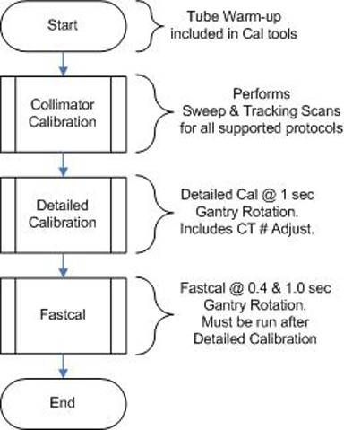
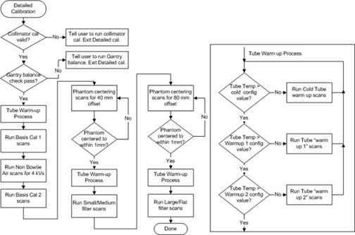
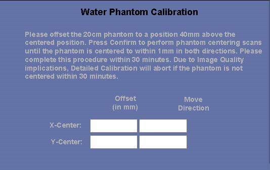

Operating Documentation
Direction 5193575-800, Rev# 5
LightSpeed 7.X Service Information - Adv
Operating Documentation |
| Required Persons | Preliminary Reqs | Procedure | Finalization |
|---|---|---|---|
| 1 | Timing Not Applicable | 3 hours | Timing Not Applicable |
The standard VCT calibration process is to run Collimator Cal, then Detailed Cal, then Fastcal. All 3 MUST be run back to back to properly update the calibration database. There are calibration vectors that Fastcal updates that Detailed cal does not as part of the VCT calibration design.
| Last Revised: | June 8, 2006 |
Illustration 1: Proper Calibration Process (Flowchart)

Illustration 2: Detailed Calibration Flowchart

| Item | Qty | Effectivity | Part# | Manufacturer | |
|---|---|---|---|---|---|
| 20cm Water phantom | 1 | - | - | - | |
Bring up the main menu: It is represented as an icon located on the bottom of the screen labeled as [SCANNER UTILITIES] . Click the on-screen Scanner Utilities button.
The Main menu consists of the following button selections:
Collimator Calibration - Runs the collimator calibration tool.
Detailed Calibration - Brings up the Detailed Calibration screen.
Includes CT # Adjust.
Center Phantom - Runs the phantom centering utility.
Adjust CT Number adjust - Runs the CT number adjust tool.
For Customer use or CT # touch-up.
Air Calibration - Stand-alone Air Cal Only.
Manufacturing use, spot cal, or troubleshooting.
Spectral Calibration - Stand-alone spectral calibrations only.
Manufacturing use, spot cal, or troubleshooting.
Quit - Exits the application
| NOTE: | Air Calibration and Spectral Calibration are 2 subsets of Detailed
Calibration. If you want to perform a spot calibration to try to troubleshoot
an issue or quickly see if an issue is resolved due to hardware change or
possible cal database issue, you can update a subset of the calibration database.
This might save time if the issue was not resolved to continue troubleshooting,
but if the issue was in the calibration database, a complete set of Detailed
cals must be run followed by a Fastcal to completely update the calibration
database after the spot calibration test prior to customer use. To run a Spot calibration, an Air calibration can be run on just the small or large focal spot. This must then be followed by a Spectral calibration of the same focal spot, but you can also just choose a single FOV and slice collimation for Spectral calibration. This must then be followed by a FastCal to complete a spot calibration. Failure to run Fastcal after updating the air and spectral cal subsets will cause a mismatch in the calibration data due to the older Fastcal data being based on the older air and spectral cal data. |
Detailed Calibration menu.
Click the on-screen button [DETAILED CALIBRATION] . The Detailed Calibration screen consists of several rows of toggle buttons that can be selected to build the desired techniques needed to perform detailed calibration processing. These buttons are located on the top left area of the screen.
kV toggle buttons (NOT SELECTABLE): 80 kV, 100 kV, 120 kV, and 140 kV.
SFOV toggle button selections: Small/Head, Medium/Head Large/Body, and Flat. (Not Selectable)
Focal Spot toggle button selections: Small and Large.
Slice Collimation toggle button selections: 2,4,8,16,32,48,64 all x0.625. (Not Selectable)
| NOTE: | All settings except Focal Spot are forced ON. Both focal spots are needed for proper system calibration. |
Select Confirm to begin the Detailed calibration process.
Gantry balance will first be checked. If balance is not within specifications calibration will not start. Gantry balance will need to be performed prior to restarting Detailed calibration.
Activation (Scan List) Screen:
Initially, the window on this screen displays a list of all scans that are performed for one of the following processes:
Tube Warm up processing: Cold Warm up, Warm up 1, or Warm up 2
Air Calibration processing
Water Calibration processing
The Activation screen title changes dynamically to indicate which process is currently running.
If for any reason a problem is detected, the current scan and processing aborts. When a problem is detected, the Activation screen’s “Pause” button becomes a “Resume” button, scanning and processing of the current scan is aborted, and an error message may be displayed on the log.
At this point, selecting the “resume” button is recommended to reacquire the last scan in order to continue the detailed calibrations. This logic is implemented for all air and water phantom scanning and processing.
Water Phantom Centering and Calibration Screen ( Illustration 3): This screen is displayed automatically after the air calibrations complete successfully. For the water Phantom there are two functions that must be accomplished on this level of processing: phantom centering and phantom calibrations. The calibration will take two sets of data: first set at isocenter, and the second set at 40mm above isocenter. The centering process will be performed for each of these offsets.
| There is a requirement that the phantom centering process may not exceed a total of 30 minutes to complete. If the process ever exceeds this time limit, detailed calibrations cannot continue and must be aborted. | |
Place the water phantom on the phantom holder of the Gantry.
Align the phantom manually on the gantry by using the alignment lights as a guide, as requested by the on screen instructions.
Make sure the alignment lights are centered on the water section. The black markers on the phantom are centered on the resolution section and the center of the water section is 60mm (2-3/8 inches) in front of the markers.
Select the [CONFIRM] button to calculate the accuracy of the alignment. A list of scans needed for phantom centering is displayed and executed. When this process completes, the Activation screen disappears and the x and y coordinate values are displayed in the “Offset” fields provided for the “X-Center” and “Y-Center” rows. These fields are located directly below the instructions field.
If either x or y coordinate value is greater than 1mm, repeat steps 2 and 3 until both values are less than or equal to 1 mm. The values in the field “Move Directions” indicate where to move the phantom on the gantry to help in aligning the phantom more accurately.
Once x and y coordinates are less than or equal to 1mm, the phantom is centered and ready to be calibrated. Select the “Continue” button to begin calibrations.
The “Cancel” button may be selected at any time while scanning is not in progress. This brings down the window and re-displays the Detailed Calibration screen.
| NOTE: | As soon as the [CONTINUE] button is selected, the application checks the X-ray tube temperature to determine whether the tube needs to be warmed up before scanning can begin. |
Illustration 3: Phantom Centering and Calibration Screen

The Scanner Utilities screen will be displayed once all detailed calibrations scans have been successfully completed.
No finalization required.